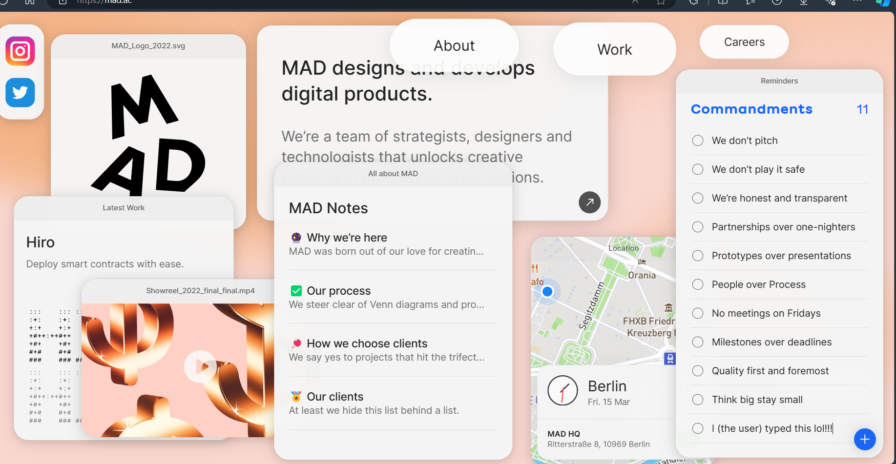
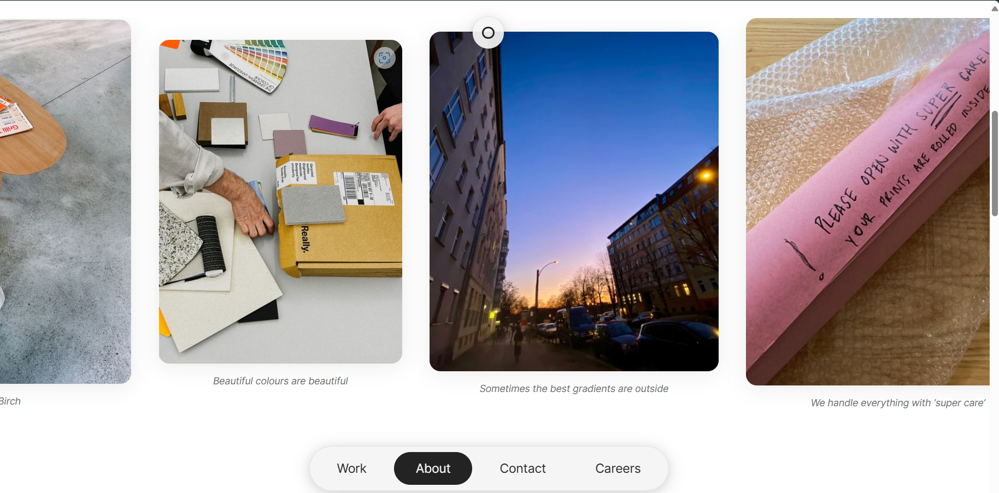
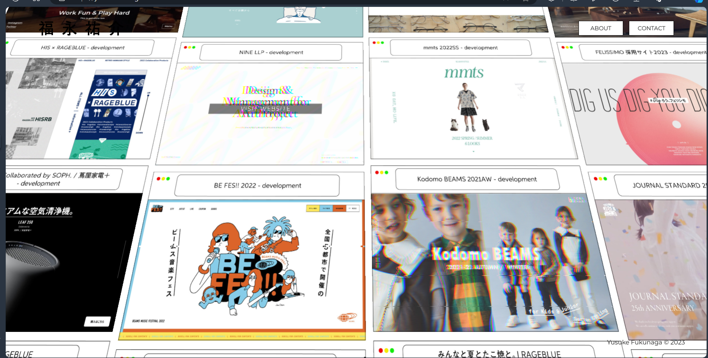
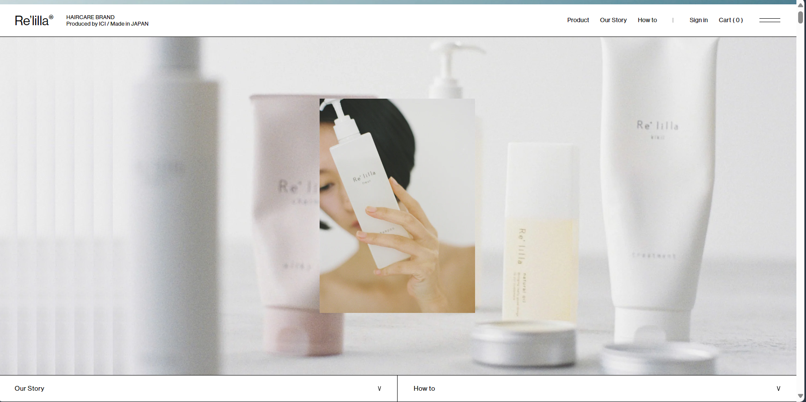
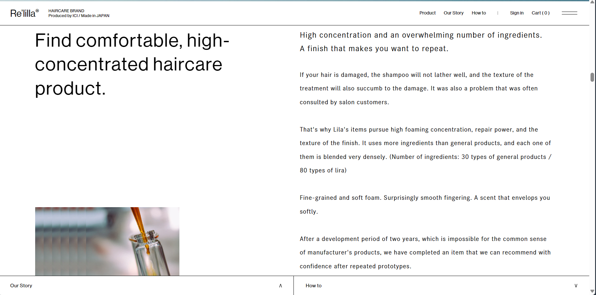
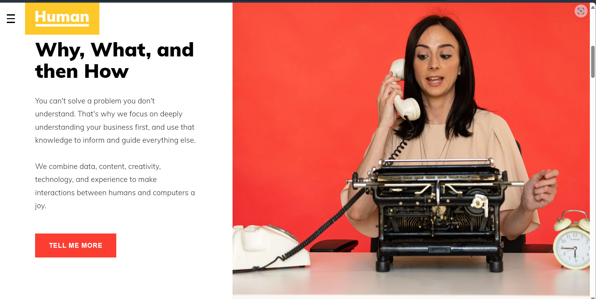
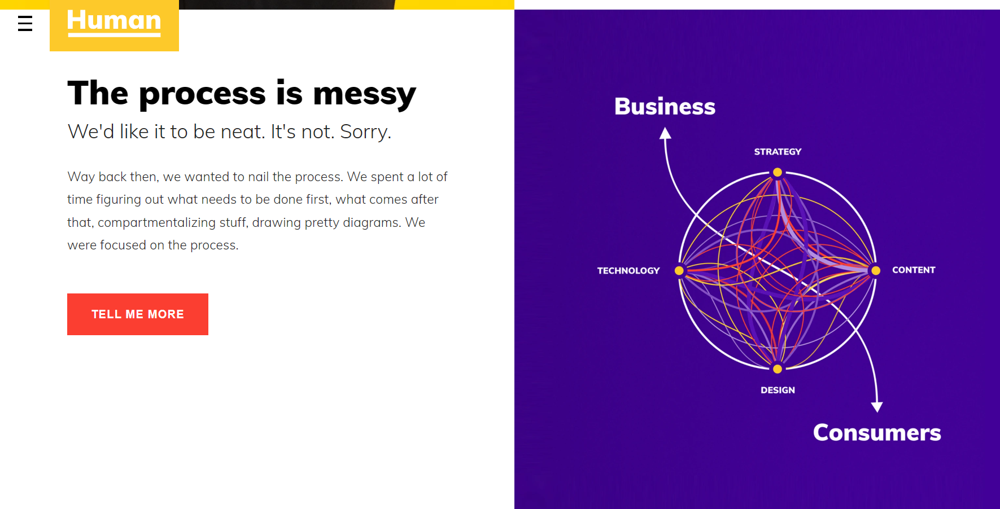
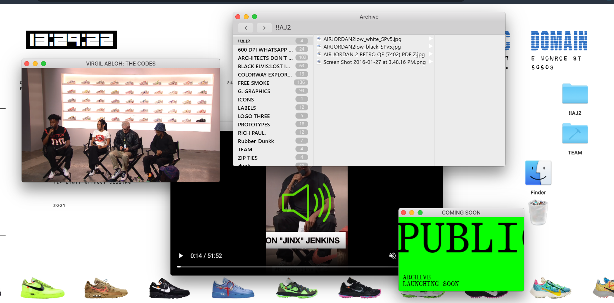
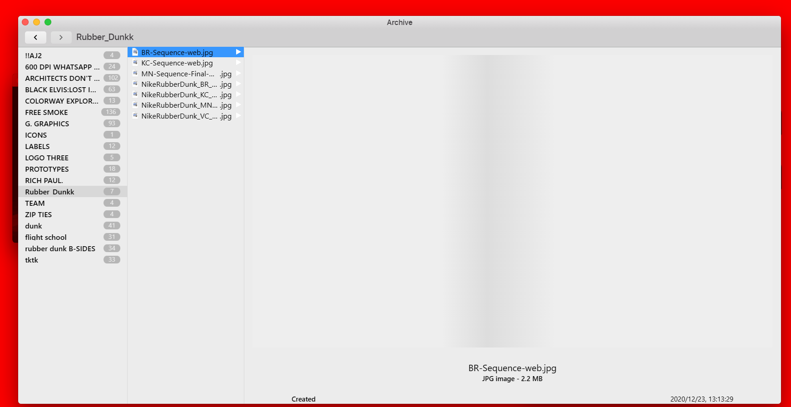

Discuss your folder structure and URL scheme. Outline your decision-making.
For my folder structure and URL scheme, I decided to follow the general convention because it is my first website that I am making and so I am adopting a simpler and easier outlook for not only the users but for my sake of understanding as well. After all, this assignment is about HTML fundamentals, so I think it makes the most sense to stick to the fundamentals for now and understand the fundamentals before I decide to go out of the convention.
Thus, the general convention for a website’s folder structure, is as follows:
Domain -> Section -> Sub section -> Page -> Subpage.
My folders are structured in a similar way. I put all my blog pages (pages) under a blog folder (section), my essay pages under the essays folder, the Designs pages under the designs folder and so on and so forth. All my pictures are under a separate pictures folder for easy reference and access. The only file outside of a folder is the index.html which is the root file of the website, so I left it out of a folder. My URL scheme follows a similar structure such that the pages are under sections.
Below is an example of a URL from my website. The path to my file is short and the relevant sections and pages are named accordingly for easy identification and the URL contains no unecessary spaces, or underscores.
In the URL it is clear that:
https://wits-digital-arts-interactive-media.github.io/WSOA3028A_2431951/BlogFolder/Week1.html
Later on I would like to make my own custom URL, such that the domain name is significantly shorter and the path to the specfic file is shorter too. (I just didn't have time to figure out the custom URL thing)
NB: wireframes are under the Designs tab.  Put in links to websites that are inspirational, and start collecting reference material here.
MAD:
As the name suggests, MAD website is “MAD” in the sense that the website is very unconventional and innovative. The website primarily promotes user interactivity by allowing the user to move objects and panels around on the homepage (such as the Logo, the About, the social media handles etc). The user finds themselves intrigued and thus stays exploring the website for a long time. The website is quite informal and casual. This can be seen primarily in the design, the theme, and the layout of the website.
The website has laid out its panels in the form of the common apps one would find on an iPhone – the notes app, the maps app, and the reminders app. For example, on the homepage, instead of briefly describing the website in a traditional layout (with just a textbox), the “why” and “what” they do, is described in the notes app, with each section being a “note”. The “reminders app” has been used to list out the company’s principles, and allows the user to add their own bullet points, while also allowing the user to cross out the bullet points already laid out (like one would cross out a reminder on the app).
One particularly unconventional thing, is that the “About, Contact, etc” headers are placed at the bottom of the website instead of at the top. In addition, the text across the website, is relatively large and uses Arial font. The text therefore is very readable and legible – this also makes the website accessible to various kinds of users. The colours are either grayscale or pastel, thus it is not overwhelming (harsh bright colours are captivating but intense and overwhelming), but friendly and inviting.
The last thing that stands out to me, is the layout and display of images on the website. The images are either scrollable, or moveable (depending on the page). On the about page, the images are horizontally scrollable, with simple but striking captions underneath and soft round borders (making it user friendly). On the “Careers” page, the images still have soft round borders, but they are moveable (as on the homepage). I would like to mostly draw from this website’s idea of moving objects around on the website as means to engage the user – particularly the images.
Yusuke Fukunaga Portfolio:
This website is actually only a portfolio for a Japanese developer – Yusuke Fukunaga. He implements an “infinite parallel scroll” to display all his works. The website (aside from the parallel scroll) is simple. He uses only black and white colours. This focuses the user’s attention to his portfolio page which is what is most important. I would like to experiment with a scrolling effect similar to this kind on my website too. It makes for great interactivity with the user as the user finds themself intrigued by the parallel “trippy” effect, and the infinite scroll keeps the user engaged – however to some extent this infinite scroll is used in dark patterns (for example the infinite scrolling on TikTok, YouTube shorts, Instagram reels etc.) and so the ethical nature of it is questionable in some cases.
 Relilla:
This website interestingly enough was developed by Yusuke Fukunaga. I’m most interested in the minimalist tendencies of this website. It is not purely minimalist, however, the website makes use of negative (white) spaces, small sized font, short text, and occasionally large images. The website is an online store for self-care products; thus the stylistic choices are for the purposes of promoting “clean” products. The website appears very pristine and neat. The colours are soft and muted – black, white, grey, beige, pale dark blues and greens – making it a very relaxing website to engage with. I would like to also implement this “elegant but soft” look on my website.
 Human Interaction:
From this website I am most interested in the layout of the text. There is a vertical split between the text and the images/other media in most parts of the website. This makes it that the user reads the website in a horizontal manner, like a book. Starting from the left to the right is how people read (in the west), and so there is a natural inclination to approach reading websites in that manner too. I would like to incorporate this in my website.
 Public Domain:
Like the MAD website, this website also makes use of moving objects and panels around. The interface is designed like an Apple computer screen (MacBook).
Reflect on interaction and the www: what does interaction mean to you?
Interaction generally is a reciprocal action in which two or more parties communicate and are directly involved with one another. Interaction within the context of the World Wide Web, can therefore be understood in a similar manner – it is the means in which users engage with online content. To facilitate interaction however, there needs to be objects that have “interactive” properties. According to “Interaction and the WWW” something is interactive if it meets these four basic requirements: It is responsive, it is not in complete control, it is not completely controlled and it does not give random feedback.
In the context of web design, it is imperative that I understand how interactivity works. Most designers design with the expectation that someone or something is going to interact with their design, thus it is clear that there are two viewpoints that are important to consider (the designer, and the audience on the receiving end). As the designer, I have certain goals and expectations of how my design will be interpreted and understood, and the audience also has a set of expectations when faced with my design. In order for those expectations to align, to ensure that there is no miscommunication, the object of interactivity must meet those four basic principles mentioned above.
The most important thing about web design is that the user must receive an output of some sort to indicate that the object of interactivity responded appropriately. Before, during and after the user engages with the website there are events that take place, and according to “Interaction and the www” these events can be classified in categories such as the following: User interface events (with the browser window), mouse events (user moving mouse to click buttons), keyboard events (user interacts with keyboard to input something), and form events (desired action was submitted thus there was a change of some sort). These are the ways that users interact with the world wide web. It is imperative therefore when designing (especially interface elements), that as the designer, I design thinking of I can prompt the user to desired events and thus ensure that the outcome of the event is appropriate and fitting for both the user and me.
Reflect on Moulthrop, S. (2003) ‘You Say You Want a Revolution? Hypertext and the Laws of Media (1991)’: how does it speak to the internet today?
In “You say you want a revolution”, Moulthrop quotes McLuhan who left behind what he calls “Laws of Media” which when summarized comes down to four basic questions that we all ought to ask ourselves when looking at inventions – What does it enhance/intensify? What does it render obsolete/displace? What does it retrieve that was previously obsolete? What does it produce or become when taken to its limit? In this case, the invention of Hypertext is interrogated by Moulthrop in the framework of these four questions.
When answering “What does Hypertext Enhance or Intensify?” Moulthrop observes that Hypertext is simply a recursion of what was already there. He points out that Hypertext is not necessarily new, yet it does not necessarily repeat, all Hypertext does is build upon concepts that already existed in early media. With regards to the consistently evolving internet today, this is still true. The internet today simply keeps building upon what was already there and brings back old trends. Hypertext is also all about “connection, linkage and affiliation”, and thus in this vision of hypertext, the boundaries of interconnected information are blurred – thus the paranoia this can give rise to is briefly explored. In the web today, the networks of information are almost endless because of how much the internet and web influence almost all areas of our society today (in addition to the fact that access to the web has increased significantly in the recent years).
In answering “What does it render obsolete?”, Moulthrop examines various opinions that the rise of Hypertext has the potential to render physical books obsolete. Some commentators thought it was an exaggeration, while some theorized that the future of physical books “is anything but happy” citing that the “cost of paper will rise precipitously” and that decline of book consumption would “increase maintenance costs to libraries”. To some extent, this is somewhat true today – one can ask themselves, how often to do people visit libraries nowadays when kindle and online versions of literature exist and for some people it is far more convenient to consume literature online. I think of myself, and how I have resorted to consuming pdfs of textbooks as opposed to the actual textbooks themselves. However, the text makes a far more important observation, that while the consumption of physical books are on a decline of some sort, the future of literature can be re-envisioned.
It is not so much that literacy in of itself is obsolete, but simply that it has taken a different form and Moulthrop argues that “hypertext means the end of the death of literature”. More now than ever (or so it seems), literature is booming. I am led to think of platforms such as “Wattpad” and “Ao3”. Literature is heavily consumed on these platforms, and it allows for not only free publication but also (mostly) free consumption. Almost anyone and everyone can not only become an author but also a reader.
This therefore leads to the next question “What does hypertext retrieve that was previously obsolete?”. In this section, Moulthrop expands on the thought of “hypertext means the end of the death of literature”. As I previously pointed out that anyone can become authors and readers on the web today, Ted Nelson (who Moulthrop references throughout the text), argues that “all readers of the system (Xanadu) can potentially become writers, or at least editors and commentators”. With hypertext, individuals can exercise their right to free speech – which is true on the internet today. On the web today, the boundaries of free speech are blurred. The anonymity of the internet allows for users to voice opinions online that would otherwise never be uttered in person.
This personal liberty, however, begs the final question “What does Hypertext become when taken to its limit?”. Moulthrop explores this in vast detail, however there are a few observations that stand out to me. Firstly that he comments that when taken to its limits “hypertext could reverse/recourse into a general medium of control”, which essentially means that hypertext in the hands of specific institutions can be used as a tool of control and influence which can limit the expression of democracy and ethical practices, and thus Moulthrop insists that “Public access Xanadu” is what we truly need. Tis is indeed true. Today it is difficult to balance free access with protection of intellectual property and free speech with ethical browsing – I immediately think of what cybersecurity looks like today.
The internet taken to its limits allows for absolute democracy in some cases however, the extent of this democracy depends on who owns the internet and who controls the distribution of information. Secondly, he comments that “…the hypertext concept in general challenge humanists and information scientists to reconsider fundamental assumptions about the social space of writing” which essentially means that assumptions and preconceived conclusions about writing and literacy are challenged in a world where hypertext exists. What I pull from this comment is that, if we want to envision the limits of the internet today, we might need to discard or at least deconstruct to reconstruct our understanding of the distribution of information and not only the technicality of it but also the ethical nature of it.